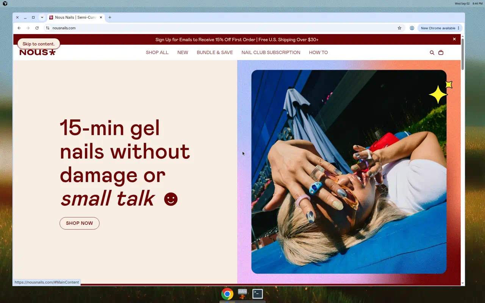

Accessibility report
ADA / WCAG 2.1 audit of nousnails.com
Automated axe-core 4.13 scan plus keyboard and visual review of Home, New Arrivals, Product, How To, Contact, and Cart. Webflow Designer was not connected (Shopify theme). Mark items as you work — status and notes stay in this browser.
Progress updates as you change issue status.
How to update this report
Open docs/ada-audit/index.html in a browser. Status dropdowns and notes save automatically in localStorage (this machine/browser only).
- To edit findings themselves, change the
REPORTobject at the bottom of this HTML file (titles, fixes, files, screenshots). - Use Export progress to download a JSON of statuses and notes, then paste it back later with Import progress.
- Screenshots live in
docs/ada-audit/images/.
Scoring starts at 100: −10 per critical type, −5 per serious, −2 per moderate. Done items are excluded from the live score.
Pages at a glance
| Page | URL | Axe | Score |
|---|
Pass What already works

Review Needs review (not counted as failures)
| Check | Notes |
|---|
Pages audited
Prioritized fix checklist
Theme files to touch
| File | Change |
|---|